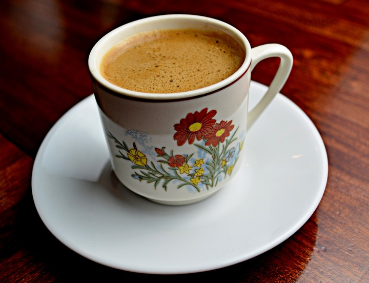

Masala Chai

Description
Masala chai is a popular beverage originating from South Asia.
It is made by brewing black tea in milk and water and then by sweetening
with sugar and adding aromatic herbs and spices.
Ingredients (2 servings)
- 1 ½ cups water
- 1 (1/2 inch) piece fresh ginger, chopped
- 4 whole cloves
- ½ cinnamon stick
- 5 pods green cardamom pods, crushed
- 1 pod black cardamom, split open
- 2 black tea bags
- ⅔ cup milk
- 2 tablespoons white sugar
Steps
- Bring water to a boil in a small pot.
-
Add ginger, cloves, cinnamon stick, green cardamom, and black cardamom;
simmer until flavors infuse, about 5 minutes.
- Add tea bags; simmer for 1 to 2 minutes.
- Add milk and sugar; bring back to a boil.
- Strain tea into cups.
Home